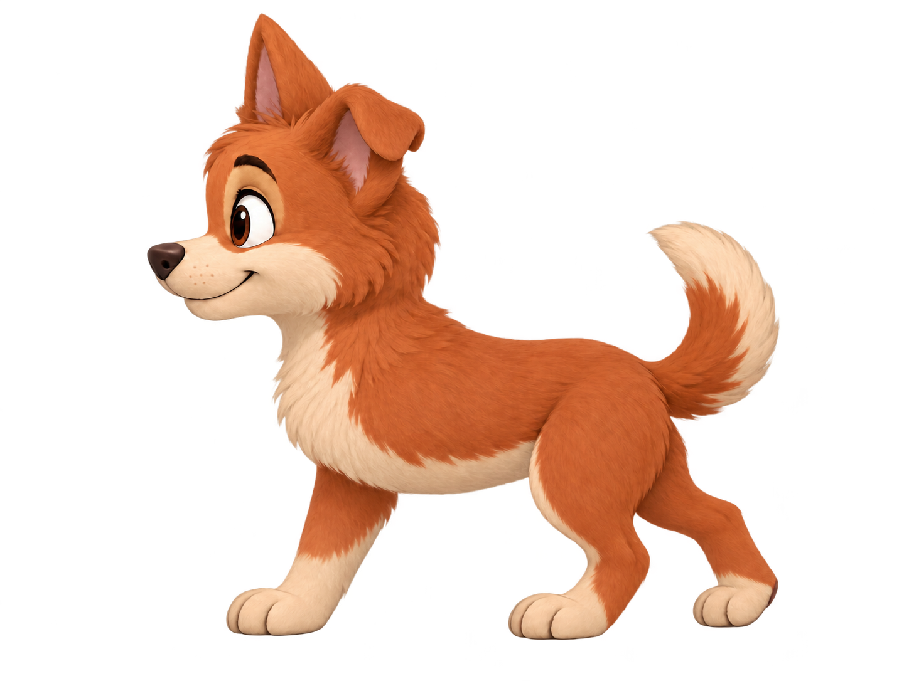
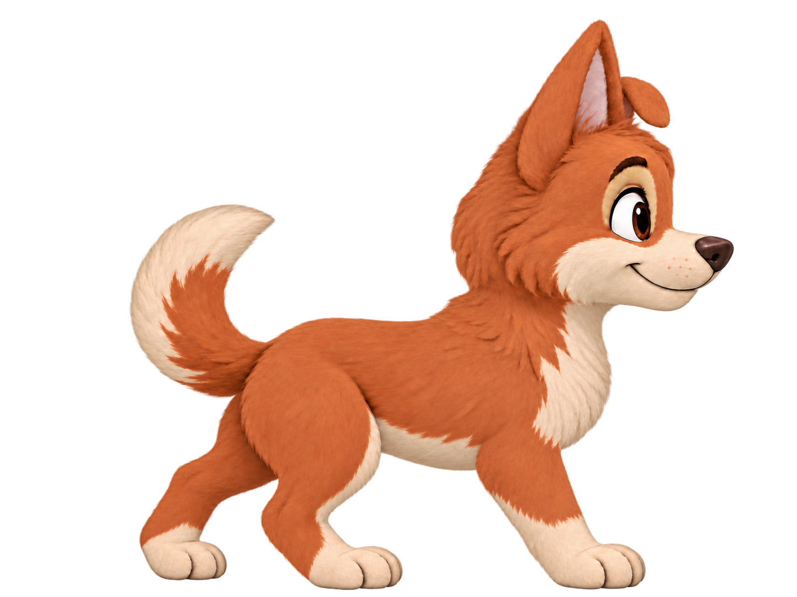

Looptest · 16 frames · nog te beoordelenYupi loopt naar links
De voorhand houdt één landing en de hup. De twee achterpoten stappen in een eigen doorlopende reeks.
Dit is een eerste proef. Frame-overgangen, schaal, grondcontact en aansluiting van het laatste op het eerste frame zijn nog niet definitief goedgekeurd. Deze test gebruikt de proef om hem te beoordelen.Goedgekeurde staande referenties

Staand links — goedgekeurd
Staand rechts — goedgekeurdOpen de GIF